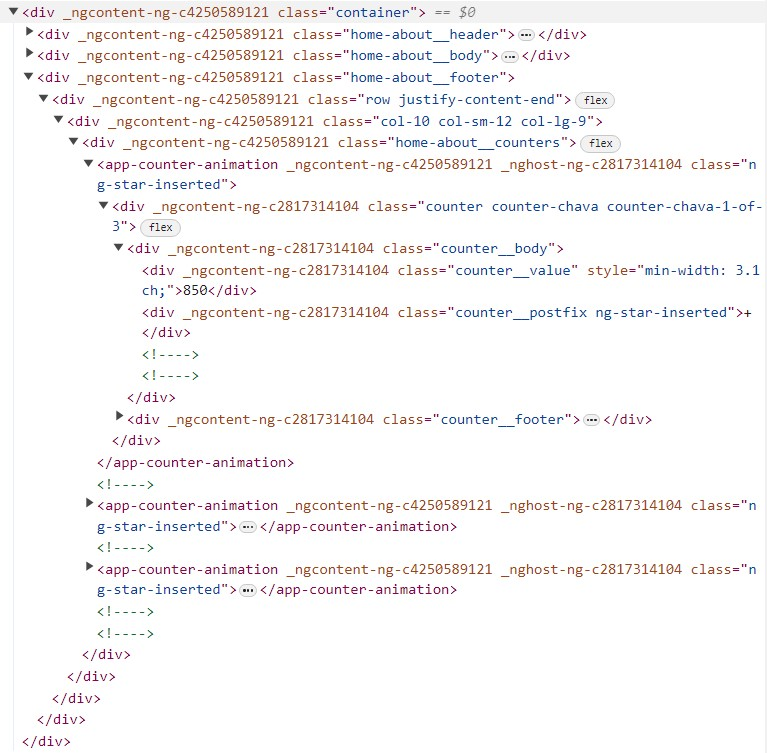

Example 2
Statistics Counter
This organism consists mainly of three (nearly) identical < div> tags with HTML that builds out an animated counter. When put together, these act as a creative and interesting way to showcase business statistics. They animate only when the page is loaded, and move position slightly as additional and/or wider numbers come in.